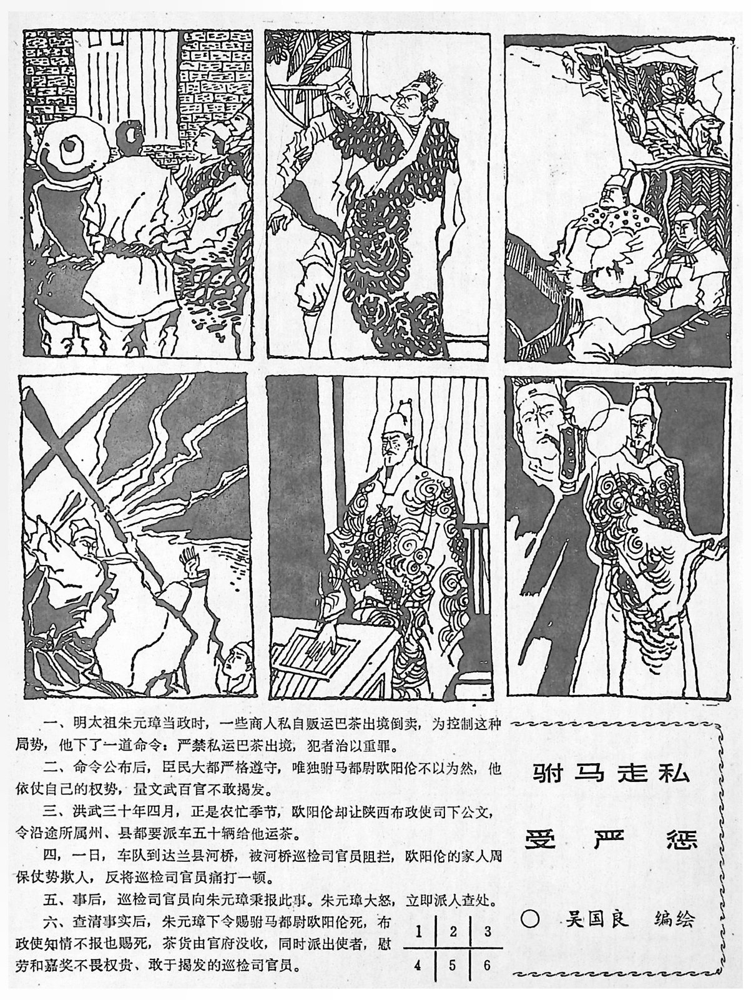

吴国良编绘 《人事》1988年第11期（总第38期），封三
驸马走私受严惩
An Imperial Son-in-Law Is Severely Punished for Smuggling
- Panel text
- 一、明太祖朱元璋当政时，一些商人私自贩运巴茶出境倒卖，为控制这种局势，他下了一道命令：严禁私运巴茶出境，犯者治以重罪。
1. When the Ming founder Zhu Yuanzhang was in power, some merchants privately carried Sichuan tea across the border to sell. To bring this under control he issued an order: smuggling Sichuan tea across the border was strictly forbidden, and offenders would be severely punished. - 二、命令公布后，臣民大都严格遵守，唯独驸马都尉欧阳伦不以为然，他依仗自己的权势，量文武百官不敢揭发。
2. Once the order was published, most officials and subjects strictly obeyed it — all except the imperial son-in-law Ouyang Lun, who thought nothing of it, relying on his power and reckoning that no official, civil or military, would dare expose him. - 三、洪武三十年四月，正是农忙季节，欧阳伦却让陕西布政使司下公文，令沿途所属州、县都要派车五十辆给他运茶。
3. In the fourth month of the thirtieth year of Hongwu, at the height of the farming season, Ouyang Lun had the Shaanxi provincial administration issue a directive ordering every prefecture and county along the route to send fifty carts to carry his tea. - 四、一日，车队到达兰县河桥，被河桥巡检司官员阻拦，欧阳伦的家人周保仗势欺人，反将巡检司官员痛打一顿。
4. One day the convoy reached the river bridge at Lan county and was stopped by the officer of the bridge inspection post. Ouyang Lun's servant Zhou Bao, bullying on the strength of his master's power, gave the officer a savage beating instead. - 五、事后，巡检司官员向朱元璋禀报此事。朱元璋大怒，立即派人查处。
5. Afterwards the inspection officer reported the matter to Zhu Yuanzhang. The emperor flew into a rage and immediately sent people to investigate. - 六、查清事实后，朱元璋下令赐驸马都尉欧阳伦死，布政使知情不报也赐死，茶货由官府没收，同时派出使者，慰劳和嘉奖不畏权贵、敢于揭发的巡检司官员。
6. Once the facts were established, Zhu Yuanzhang ordered the imperial son-in-law Ouyang Lun to die; the provincial administrator, who had known and not reported it, was also ordered to die; the tea was confiscated; and envoys were sent to reward and commend the inspection officer who had feared no one powerful and dared to expose the crime.
- 一、明太祖朱元璋当政时，一些商人私自贩运巴茶出境倒卖，为控制这种局势，他下了一道命令：严禁私运巴茶出境，犯者治以重罪。
- Description
- Six-panel picture story: the Hongwu emperor bans the smuggling of tea across the border; his son-in-law Ouyang Lun ignores the ban and his servant beats the official who stops his convoy; the emperor orders Ouyang Lun's death and rewards the official.
- Note
- Ouyang Lun, husband of the Hongwu emperor's daughter, was executed in 1397 for smuggling tea. The story was a standard exemplum of punishing the powerful; in 1988 it spoke to official profiteering (官倒).
- Artist
- Wu Guoliang 吴国良 (adapted and drawn)
- Published in
- 《人事》1988年第11期（总第38期）, inside back cover
- Themes
- Exemplary history · Privilege · Picture stories (连环画)

Cite
Wu Guoliang, “驸马走私受严惩” [An Imperial Son-in-Law Is Severely Punished for Smuggling], Renshi (Personnel) 《人事》, 1988, no. 11, inside back cover.